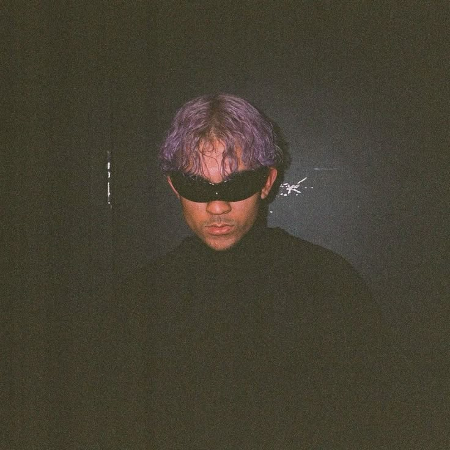

About

¿Quién es Tainy?
Tainy, cuyo nombre es Marco Masís, es un productor musical puertorriqueño. Ha trabajado con Bad Bunny, J Balvin y muchos otros artistas.
Su estilo mezcla reguetón, sonidos electrónicos y nuevas ideas de producción musical.
Sitio oficial